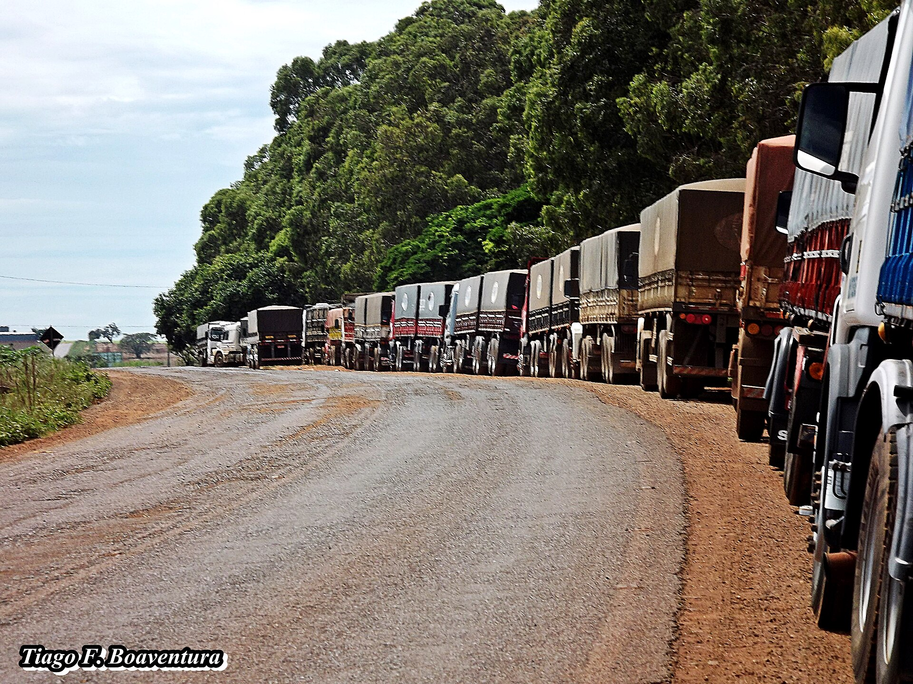
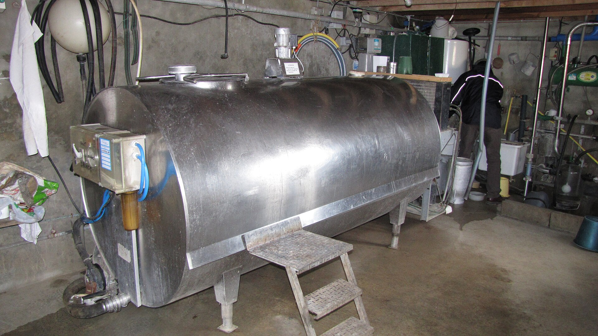
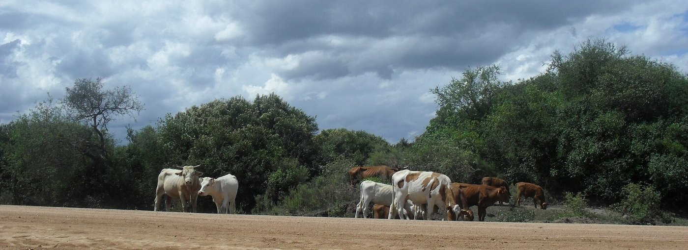
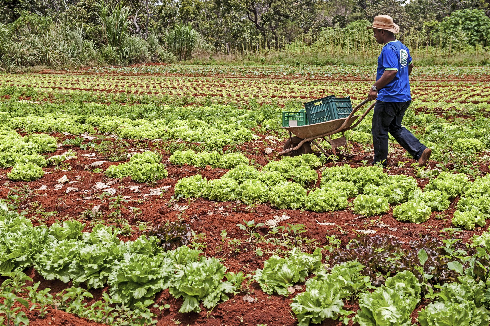

De onde vem
o preço

Por que o preço da sua soja muda quando chove nos Estados Unidos?
O preço é um cabo de guerra
Muito produto e pouca procura, o preço cai. Pouco produto e muita procura, o preço sobe.
| Seca nos Estados Unidos | ▲ | menos oferta no mundo |
| China compra mais | ▲ | mais procura |
| Dólar sobe | ▲ | mais reais por saca |
| Frete caro na colheita | ▼ | mais desconto no interior |
Você não manda no preço
Cem hectares de soja são um grão de areia no mercado mundial. Mas o produtor manda em três coisas:
produzir a saca, o litro, o kg por menos
gordura do leite, acabamento do boi, calibre da fruta
não vender tudo quando todo mundo vende
Apertado dos dois lados
Cada elo cobra: frete, armazenagem, indústria, impostos, margem.
Chicago, o dólar e o porto
| Chicago | US$ 11,30 | por bushel |
| + prêmio de porto | US$ 0,50 | por bushel |
| na saca (2,2 bushels) | US$ 26,00 | por saca |
| × dólar a R$ 5,40 | R$ 140 | no porto |
| − frete e despesas | R$ 12 | |
| na sua região | R$ 128 | por saca |
Dólar sobe: a soja vale mais em reais, sem nada mudar na lavoura.
Frete sobe: quem está longe do porto recebe menos.
Cotação não é preço na porteira
- Frete até a cooperativa
- Umidade e impureza: soja acima de 14% tem desconto
- Funrural: 1,63% retido na venda
- Armazenagem, se esperar preço
R$ 140 na TV podem virar perto de R$ 128 na cooperativa.
Porto ou cooperativa?
Os insumos também vêm de longe
- Adubo: a maior parte é importada, segue o dólar
- Diesel: segue o petróleo
- Defensivos e peças: matéria-prima de fora
- Ração: milho e farelo, cotados como a soja
Quanto do seu produto paga o insumo?
| Adubo, t | Soja, sc | Sacas por t | |
|---|---|---|---|
| Um ano | R$ 3.300 | R$ 120 | 27,5 |
| No ano seguinte | R$ 3.600 | R$ 140 | 25,7 |
Pagou mais caro pelo adubo, e ficou em situação melhor.
O dobro de sacas pela mesma ureia
O preço em reais sobe todo ano com a inflação. A relação de troca mostra o poder de compra.
O leite tem regra própria
- O laticínio define, mês a mês
- Pasto bom, muito leite: o preço cai
- Qualidade e volume rendem bonificação
- No RS, o Conseleite publica referência
Um saco de ração de 40 kg a R$ 96 = 40 litros de leite a R$ 2,40.

O boi tem ciclo próprio

Vendido em kg vivo. O preço sobe e desce em ciclos de anos, que o vídeo sobre pecuária na prática explica.
Hortaliças e frutas não esperam
- O preço muda semana a semana na CEASA
- A entressafra paga melhor: escalonar o plantio
- Feira, cestas, PNAE: preço mais estável

O preço tem estação
Na colheita, todo mundo vende ao mesmo tempo e o preço cai. Na entressafra, ele tende a se recuperar.
Fontes de preço
| Cooperativa ou comprador | o preço que vale, já com o frete da região |
| EMATER/RS | Informativo Conjuntural, toda semana |
| CEPEA | indicador diário, nacional: tendência |
| CONAB | histórico de preços, safra, custos |
| CEASA/RS | hortaliças e frutas no atacado |
"Por que você usou esse preço?"
de onde veio o número
quando foi consultado
por que vale para a sua safra e a sua região
Você não manda no preço.
Manda no custo, na qualidade e na hora de vender.
Referências
KAY, R. D.; EDWARDS, W. M.; DUFFY, P. A. Gestão de propriedades rurais. 7. ed. Porto Alegre: AMGH, 2014.
OLIVEIRA, R. M. Gestão da Propriedade Rural, módulo 2: de onde vem o preço. Produzir Não Basta, 2026. produzirnaobasta.com.br/produtor
Dados: CEPEA/Esalq-USP · CONAB · EMATER/RS-ASCAR · Conseleite · relação de troca: NESPro/UFRGS, Camnpal e CONAB (ferramenta do site).
Fotos: caminhões, Tiago Firmino Boaventura (CC BY 3.0) · resfriador, Fotonovela (CC BY-SA 3.0) · rebanho, Paula Cavalheiro (CC BY-SA 3.0) · horta, Sergio Amaral/MDS (CC BY-SA 2.0) · silo-bolsa, Roblespepe (CC BY-SA 3.0).
Material elaborado pelo Prof. Róberson Macedo de Oliveira (Colégio Politécnico da UFSM), com apoio de IA (Claude, Anthropic) na organização didática e na diagramação; conteúdo, seleção e decisões de ensino são do docente.